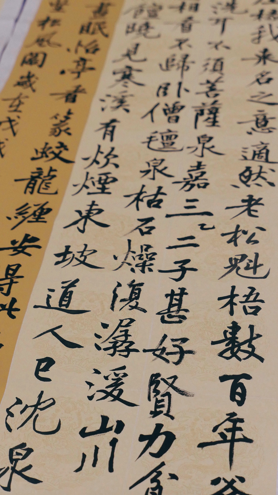

At first glance, Japanese characters may seem mysterious and incomprehensible. It seems that each hieroglyph consists of jumbled lines, but in fact, each hieroglyph represents a certain picture and has a meaning associated with its content. The Japanese script contains many hieroglyphs, but fortunately not as many as is often believed in the West.
Elementary school graduates must know 881 hieroglyphs. Such a person is considered literate. A high school graduate must know 1850. To read books fluently in college, you need to remember about 3 thousand hieroglyphs. However, all these thousands of hieroglyphs are composed of less than 300 elements, or pictures, many of which are rarely used.
Scientists say that until the third century BC. the Japanese did not have a written language at all (since no evidence of one was found). The Japanese had an verbal language and when they discovered that their neighbor China had not only verbal, but also written language, they decided to adopt it. The Japanese took Chinese characters and began to use them to write the roots of words, but they were not suitable for grammatical endings due to the differences in languages.
In the beginning, the Japanese tried to write down both the endings and roots of words with hieroglyphs. But after a few hundred years, they realized that this was very inconvenient, and then they decided to turn some hieroglyphs-bodices into simple signs of the phonetic system to use them to convey endings. This is how the phonetic alphabet of Kana appeared.
Kana
Kana is divided into katakana and hiragana, the former is for writing borrowed words, and the latter for grammatical endings. Below is the example of both with romaji signifying how to pronounce them (romaji is the way of transliteration of Japanese sounds into English).
| Romaji | Katakana | Hiragana |
|---|---|---|
| a | ア | あ |
| i | イ | い |
| u | ウ | う |
| e | エ | え |
| o | オ | お |
| ka | カ | か |
| shi | シ | し |
| tsu | ツ | つ |
| ne | ネ | わ |
| ho | ホ | ほ |
Kanji
Hieroglyphs, that are representing word roots. Kanji hieroglyphs can easily be distinguished from kana signs by their complexity.
日
Sun, day. Alone, the hieroglyph sounds like CHI, in combinations - NICHI. Used to be depicted as a circle with a dot in the middle (like what you saw, then you drew), but later a rectangle was made from a circle, and the point turned into a line.
水
Water. Alone, the hieroglyph sounds like MIDZU, in combinations - SUI. The Chinese thought that if you "squeeze out" the river, there would be water: so the lateral lines are like the banks, and the line in the middle is the river.
左
Left. HIDARI / SA (here and below - one / in syllables)) is an image of a hand holding a carpenter's ruler, since carpenters usually hold a ruler in their left hand.
男
Man (OTOKO / DAN). The hieroglyph itself consists of two other hieroglyphs: the upper one is "rice field" and the lower one is "strength".
中
Middle, inside (NAKA or CHUU) - mouth / hole, in the middle of which there is a vertical line.
国
Country, nation (KUNI / KOKU); inside the square frame, denoting the border, there is the hieroglyph "jewel" (TAMA or DAMA) - the "image" of the king holding the national treasure.
東
East (HIGASHI / TOO or TO (sometimes read as AZUMA in surnames)) is an image of the sun rising in the east behind a tree (this is such a mini-scene).